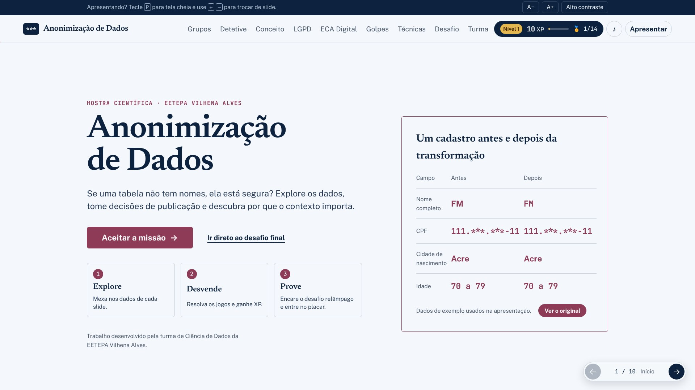
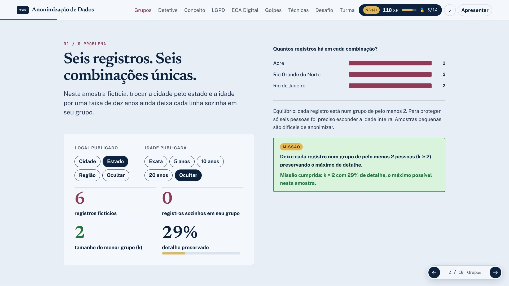
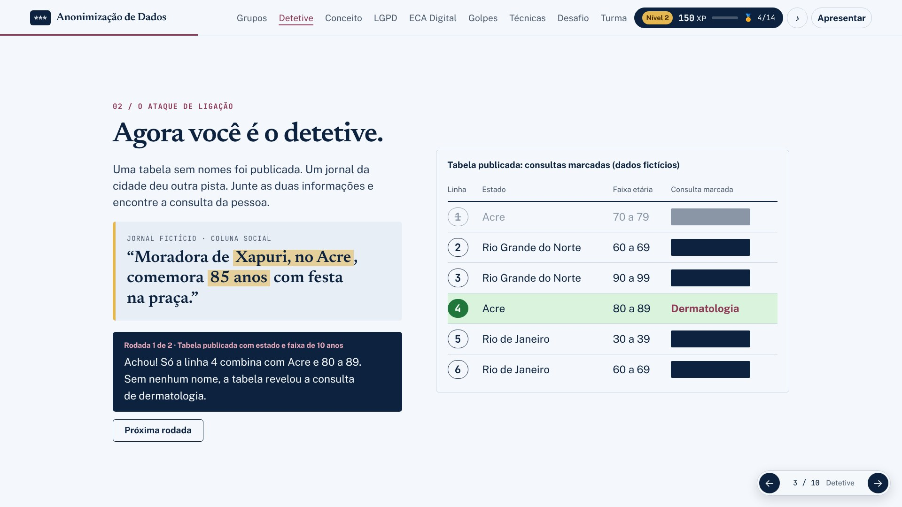
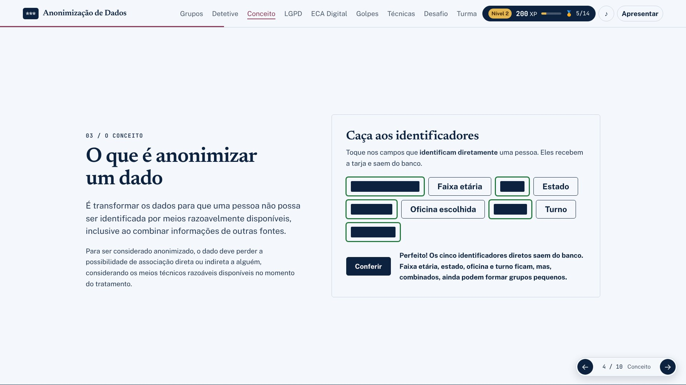
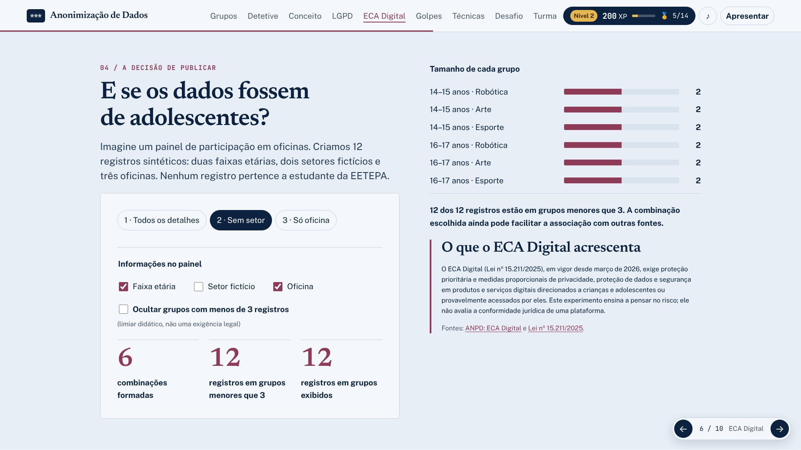
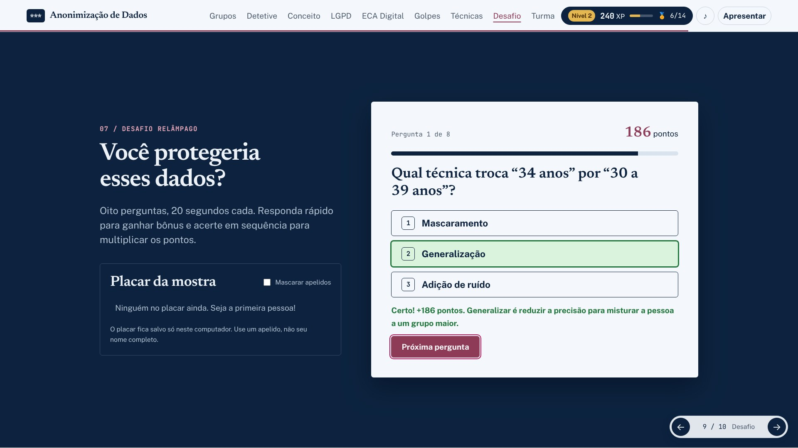
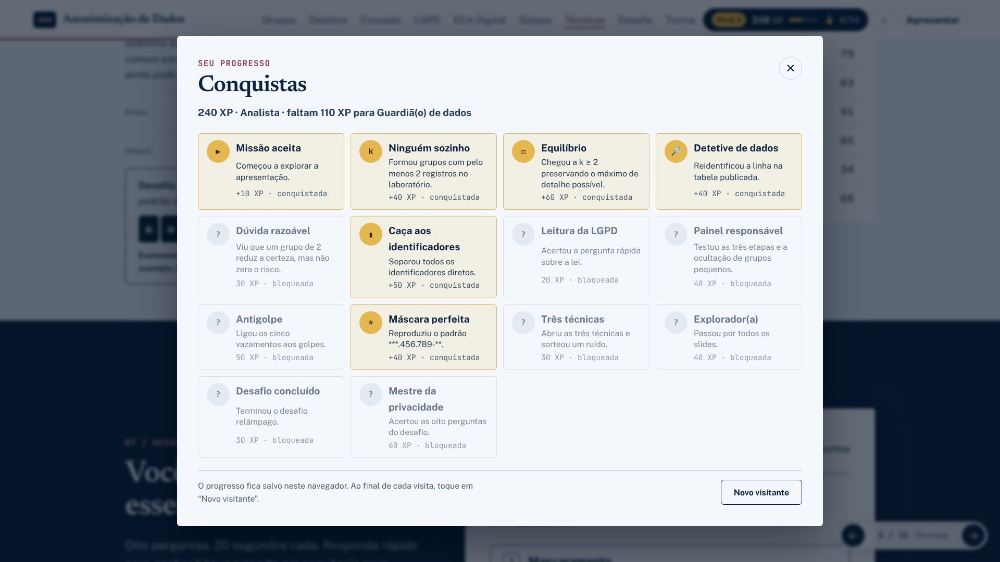

***Anonimização de Dados
Mostra Científica · EETEPA Vilhena Alves
Se uma tabela não tem nomes, ela está segura? Explore os dados, jogue e descubra por que o contexto importa.
Um cadastro antes e depois da transformação
Desenvolvido pela turma de Ciência de Dados
EETEPA Vilhena Alves
O problema
45 milhões de brasileiros sofreram tentativas de golpe com os próprios dados pessoais em 2025.
Os números
Boletins de ocorrência por ano
258 golpes por hora em 2025 · alta de 429,8% desde 2018
FBSP, Anuário Brasileiro de Segurança Pública (2025 e 2026)
Entre quem sofreu tentativa ou golpe com dados pessoais
84%
foram abordados por aplicativos de mensagem, como WhatsApp e Telegram
39%relataram tentativas de golpe contra parentes
Cetic.br/NIC.br, Privacidade e Proteção de Dados Pessoais 2025
Os números
População dos EUA com combinação única destes dados
CEP + gênero + data de nascimento87%
Cidade + gênero + data de nascimento53%
Condado + gênero + data de nascimento18%
Quanto mais preciso o local, mais fácil achar a pessoa.
Latanya Sweeney, Simple Demographics Often Identify People Uniquely (2000)
Reidentificação estimada em bases “anonimizadas”
99,98%
dos norte-americanos seriam reidentificados corretamente em qualquer base “anonimizada”.
15 atributos demográficos
como idade, gênero e estado civil
Rocher, Hendrickx e de Montjoye, Nature Communications (2019)
A solução
Um laboratório no navegador para mexer nos dados antes de publicar.
O público testa decisões de publicação, tenta reidentificar pessoas numa tabela sem nomes e aprende técnicas de proteção, com a LGPD e o ECA Digital como pano de fundo.

O que você encontra
01
Escolha como publicar local e idade e veja o menor grupo mudar na hora.
k-anonimato
02
Use a pista de um jornal para achar uma pessoa numa tabela sem nomes.
Ataque de ligação
03
Separe o que identifica alguém diretamente do que pode ficar no banco.
Conceito e LGPD
04
Publique dados sintéticos de adolescentes sem expor grupos pequenos.
Supressão
05
Ligue cada dado vazado ao golpe que ele facilita.
Prevenção
06
Oito perguntas com tempo, bônus por sequência e placar da mostra.
Quiz final
Experiência 01 · Laboratório de grupos
Seis registros fictícios. k é o tamanho do menor grupo: com k = 1, alguém fica sozinho e pode ser encontrado.
k = 1
Os 6 registros ficam sozinhos em seus grupos.
Detalhe100%
k = 1
Generalizar ainda deixa os 6 sozinhos nesta amostra.
Detalhe57%
k = 2
Ninguém sozinho, mas sobra pouca informação.
Detalhe14%
k = 2
O máximo de detalhe possível sem deixar ninguém sozinho.
Detalhe29%
k = 6
Todos no mesmo grupo: seguro, mas inútil para estudar.
Detalhe0%
Telas do site
Abertura

Laboratório de grupos

Detetive

Caça aos identificadores

Painel do ECA Digital

Desafio relâmpago
Gamificação

Como funciona por trás
Sem instalação nem build: o mesmo arquivo abre no computador do estande e é publicado no GitHub Pages.
Cálculos, XP, conquistas e placar ficam no próprio aparelho. Nada é enviado para servidores.
Nenhum registro de estudante real. O limiar de 3 registros no painel do ECA Digital é didático, não uma exigência legal.
Alto contraste, ajuste de texto, navegação por teclado e telas de 320 a 2560 px. Sem JavaScript, o conteúdo continua legível.
Protótipo funcional
Cada atualização enviada ao GitHub publica a nova versão no GitHub Pages.
1Abra o site no computador do estande.
2Tecle P para a tela cheia.
3Use ← → para trocar de slide.
4No fim, toque em “Novo visitante”.
Próximos passos
01Modo competição por equipes no telão da sala.
02Novas técnicas no laboratório, como privacidade diferencial.
03Roteiro de aula para professores aplicarem os experimentos com suas turmas.
04Banco de perguntas maior, com níveis de dificuldade no desafio.
05Mais acessibilidade: audiodescrição dos gráficos e versão em Libras.
***Anonimização de Dados
Ciência de Dados para perguntar antes de publicar
Explore os dados no navegador ou aponte a câmera para o QR code:
albertomateus9.github.io/anonimizacao-de-dados
Tecle P para tela cheia e use as setas ← → para passar